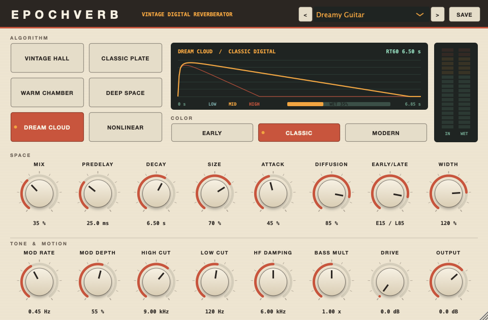

EpochVerb is a compiled, installed 64-bit VST3 reverb with six original algorithms and three converter color modes. Ableton Live 11.3.43 scans it and loads it on an audio track.

The interface as rendered by the plug-in's own editor code, preset Dreamy Guitar. It resizes from 760 to 1520 px wide.
Listen
A synthetic phrase of six plucked notes and two snare hits, 35% wet. Every clip is loudness matched to -18 LUFS. These are offline renders from the same engine the plug-in runs.
Dry
The phrase with no reverb.
Vintage Hall
CLASSIC3.5 s decay.
Classic Plate
CLASSIC3.5 s decay.
Warm Chamber
CLASSIC1.4 s decay.
Deep Space
CLASSIC8 s decay, Attack 50%, deeper modulation.
Dream Cloud
CLASSIC8 s decay, Attack 50%, deeper modulation.
Nonlinear Gate
CLASSIC0.45 s gate.
Hall, Early Digital
EARLY7 kHz bandwidth, 10-bit grain, sample-and-hold.
Hall, Modern
MODERNFull bandwidth, clean.
Engines
| Algorithm | Structure | Character |
|---|---|---|
| Vintage Hall | 8-line feedback delay network, Hadamard mixing, two modulated allpasses per loop, 3-band decay filter | Dense chorused hall, long smooth tails |
| Classic Plate | Figure-eight tank after Dattorro (1997), stereo-fed, modulated tank allpasses | Bright diffuse plate |
| Warm Chamber | Short 8-line network, 22 early reflection taps | Intimate room |
| Deep Space | 16-line network, three-stage input smear, 85% random modulation | Slow-building stereo wash |
| Dream Cloud | 8-line network, deep modulation on delays and allpasses | Ultra-smooth atmospheric tails |
| Nonlinear Gate | 48-tap diffused burst under a gate or reverse envelope | 80s gated snare, reverse swells |
Color modes change the signal path. Early band-limits to 7 kHz and adds a 10-bit gain-ranged quantizer, 31.25 kHz sample-and-hold, signal-following hiss and unstable modulation. Classic runs at 11.5 kHz with 13-bit grain and gentle saturation. Modern is full bandwidth and clean.
Measurements
| Measure | Result |
|---|---|
| Decay accuracy at 2 s, 60 renders (6 reverbs, 3 colors, 44.1 to 96 kHz) | -10.7% to +1.7% |
| Decay accuracy 0.5 to 10 s, Modern color | -6.2% to +6.6%; plate at 0.5 s -21.6% |
| Stereo correlation of the tail | -0.02 to +0.05 |
| Largest DC offset | 3.9e-10 |
| Random automation of every parameter, 20 s per algorithm | finite, bounded by the 2.0 soft limit |
| Residual 15 s after the input stops | below 1e-28 |
| State restore into a fresh instance | sample-identical audio |
| CPU, 48 kHz, one core of an i5-7500 | 18x to 54x realtime (2 to 6% of a core) |
| Loudness across algorithms, 2 s impulse, Classic color | matched to 0.500 ±0.001 (gate 0.350) |
Reference comparison
VintageVerb is not installed on this Mac. Valhalla Supermassive is, so its impulse response (Gemini, Delay 40 ms, Feedback 75%, Density 100%) was measured with the same code as EpochVerb at 2 s decay. Tail ringing is the tallest narrow peak in the tail spectrum above a third-octave average. Pure decaying noise scores 9.1 dB, the smooth ideal.
| Source | Ringing | Bins over 11 dB | Dense after | L/R corr |
|---|---|---|---|---|
| Ideal floor, decaying noise | 9.1 dB | 0 | n/a | 0.00 |
| Valhalla Supermassive | 9.1 dB | 0 | 90 ms | 0.02 |
| EpochVerb Dream Cloud | 8.7 dB | 0 | 75 ms | 0.02 |
| EpochVerb Deep Space | 10.3 dB | 0 | 130 ms | 0.01 |
| EpochVerb Classic Plate | 11.0 dB | 0 | 255 ms | -0.01 |
| EpochVerb Vintage Hall | 11.6 dB | 1 | 60 ms | 0.01 |
| EpochVerb Warm Chamber | 13.7 dB | 9 | 25 ms | 0.03 |
Dream Cloud and Deep Space sit at the noise floor, level with the Valhalla reference. Hall shows a single stray bin. Chamber has real modal peaks at a 2 s decay.
Verified
| Check | Result | Evidence |
|---|---|---|
| Steinberg VST3 validator, built from the official SDK | 47 passed, 0 failed | tests/validation/steinberg_validator.txt |
| pluginval strictness 10: editor, state, automation, fuzzing, threads, 44.1/48/96 kHz, blocks 64 to 1024 | SUCCESS | tests/validation/pluginval_strict10.txt |
| Installed VST3 in a host: every algorithm audible, automation, 12 programs, state, bypass, mono in, 88.2 kHz, odd blocks | 69 of 69 | tests/validation/host_test.txt |
| Preset files load; user presets save, reload and list | 6 of 6 | tests/validation/preset_test.txt |
| Live 11.3.43 plug-in scan | found, drwu EpochVerb 1.0.0, Fx|Reverb | Live PluginScanner.txt 16:33:50 |
| Live 11.3.43 loads it on an audio track from a set | "Restored: EpochVerb", 20 parameters | Live Log.txt 16:44:48 |
Still to check in Live
This session does not take control of the Mac's screen, so these need you at Live. Open tests/live/EpochVerb_LiveTest.als, where EpochVerb already sits on the "EpochVerb Test" track, and drop in any audio clip.
- Open Audio passes through and you hear the reverb.
- Open Each of the six algorithms sounds distinct.
- Open Each knob moves its own parameter in Live's device view.
- Open The editor opens and stays responsive in Live's window.
- Open Factory presets load from the menu.
- Open A drawn automation lane plays back.
- Open Save the set, reopen it, settings return.
- Open Live's device on/off behaves.
- Open No crash in a long session.
- Open Export Audio/Video renders the reverb.
No listening tests were run in this session. Every quality claim above is an objective measurement.
Limitations
- Warm Chamber rings at long decays. Its loops total about 0.18 s, which gives few modes per hertz. It is tuned for 0.3 to 1.5 s rooms.
- Classic Plate fills in late. Full echo density arrives at 255 ms.
- Intel build only. This Mac is x86_64. The README has the flag for an Apple Silicon or universal build.
- No REA analysis. No VintageVerb binary is on this Mac, and the DSP is original.
- Ad-hoc signed. Fine on this Mac. Another Mac needs Developer ID signing.
Files
- Plug-in:
~/Library/Audio/Plug-Ins/VST3/EpochVerb.vst3 - Project, source and build:
~/Projects/EpochVerb/ - User manual:
~/Projects/EpochVerb/docs/USER_MANUAL.md - Verification report:
~/Projects/EpochVerb/docs/VERIFICATION.md - Measurements workbook:
~/Projects/EpochVerb/tests/out/EpochVerb_measurements.xlsx - Live test set:
~/Projects/EpochVerb/tests/live/EpochVerb_LiveTest.als - Rerun every check:
~/Projects/EpochVerb/tests/run_all.sh